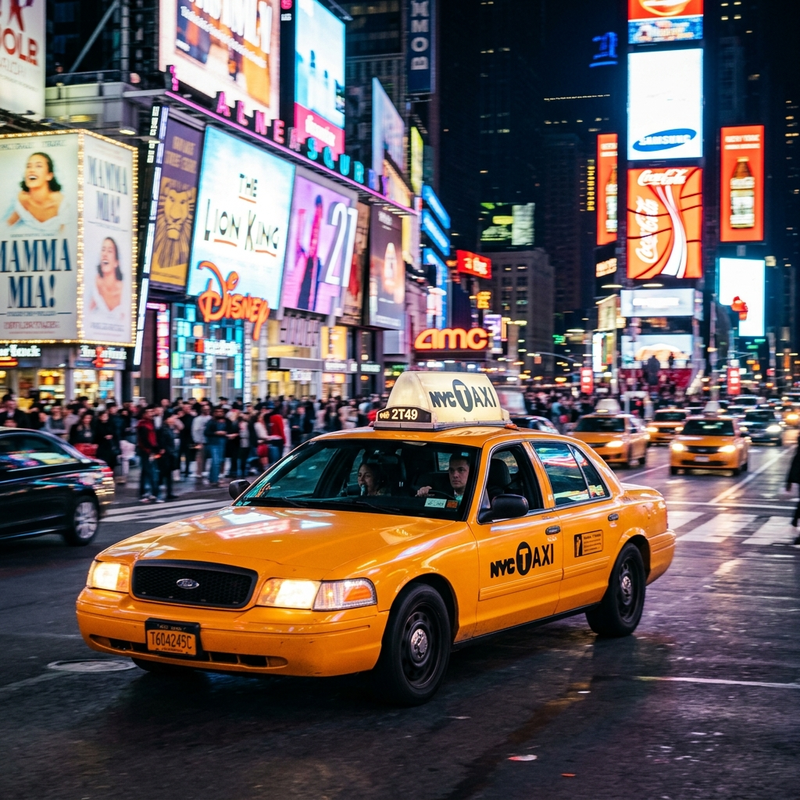

The cabin bell chimes. You step off the plane, and the thick, electric air of New York hits you for the first time. You aren't just in an airport; you're at the gateway to the world's most ambitious city.

Your first decision defines your trip. Do you sit in the back of a stagnant Uber, watching the meter climb as the Van Wyck Expressway grinds to a halt? Or do you dive into the rhythm of the city immediately? We recommend the latter.
The JFK Gambit
From JFK, your goal is Manhattan’s iron heart. For ~$15, you can secure a seat on the Long Island Rail Road (LIRR). As the train leaves Queens and dives under the East River, there is a singular moment of silence before you burst into the organized chaos of Penn Station or the cathedral-like splendor of Grand Central Madison.
The LGA Free-Flow
LaGuardia used to be a punchline; now, it’s a revelation. The LGA Link Q70 bus isn't just a transport option—it's a free gift from the city. It whisks you away to the 74th St subway hub in Jackson Heights. Standing on that elevated platform, watching the 7 train roll in against the backdrop of the skyline, is the most cinematic arrival in travel.
The Taxi Hustle
If you must take a car, ignore the "hustlers" in the terminal. Head straight for the yellow cab line. There is a fixed fare from JFK ($70 + tolls), and while it lacks the speed of the rails, it offers that iconic view of the Midtown skyline through a rain-streaked window—a scene straight out of 1970s cinema.
Regardless of how you enter, your first swipe of the OMNY reader is your official handshake with the city. Welcome home.